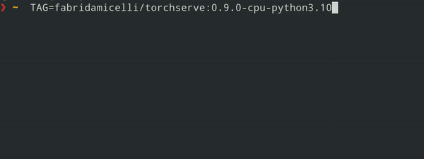
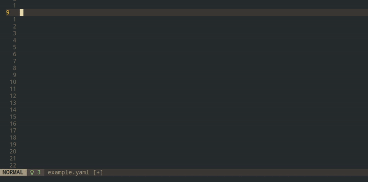

Python Packages
I created and maintain the following Python packages:
echoes
A scikit-learn compatible package for Machine Learning with Echo State Networks
- 🤖 Machine learning with Echo State Networks
- 🧱 High level API, scikit-learn compatible API, eg fit-predict interface
- 💨 Fast! (Thanks to numba ✨)
- 🐍
pip install echoes
kuramoto
Classical model to study synchronization phenomena
- 🤹 Implementation of the Kuramoto model on graphs.
- 🐍
pip install kuramoto
torchserve-docker
Container images with specific TorchServe and Python version working out-of-the-box. This is a GitHub-Action-based cron job that watches for TorchServe releases and automatically generates and pushed the images to Dockerhub.


TorchServe
TorchServe is a popular framework to deploy PyTorch-based neural networks. I have fixed bugs in Dockerfile and build scripts. I have also implemented CI (GitHub) workflows for continuous testing of docker images and containers.
cronex.nvim
A Neovim Plugin to render in-line, human-readable cron expressions. Cronex is kind of a “client” that allows the Neovim user to integrate and customize “servers” that actually parse the expressions (“explainers”) in a flexible fashion.

Other Community Contributions
- Translation English → German of the HuggingFace Course
- Translation English → Spanish of the Python 3.9 Official Documentation
- Improving Website of PyCampES, an event where people meet to code, learn for fun. See my contributions here
Minor Fixes: Little typos/bugs or documentation contributions:
- AnswerDotAI/fastcore
- astral-sh/ty
- basecamp/omakub
- carderne/postmodern-mono
- fastai/fastai
- fastai/fastbook
- koaning/calmcode-feedback
- minodisk/bigquery-runner
- ms-jpq/markdown-live-preview
- scikit-learn/scikit-learn
For more details, check out my GitHub Profile.